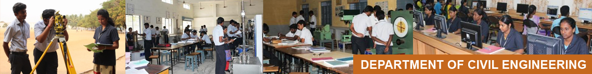
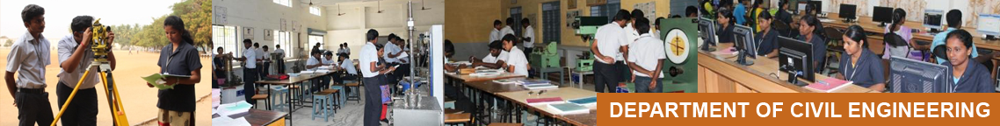

Highlights
- Total Built-up Area: 10,000 sq.ft
- NBA accreditation in 2001, 2008 and 2014.
- Best Industry linked department award in 2014-2015 ,2018-2019,2019-2020
- Research centre: 6 approved research supervisors with 53 research scholars (07- completed & 46- Pursuing).
- Faculty strength: 17 with Ph.D and 25 pursuing in diversified domains of Civil Engineering.
- Faculties awards and fellowships from AICTE, BOYSCAST, IE(I), CTS, ASDF, IITG and IIT M, IEEE, ICACI, SHRISTI
- Sponsored research projects: 134.87 lakhs funded from AICTE, IE (I), Coir Board, TNSCST, UGC, SPARK, DST and CSIR and ACI with IIT-M.
- Publication by faculty in conference: 378 December 2021
- Publication by faculty in national and international journals: 521 till December 2021
Milestones
- 1984 - B.E Civil Engineering
- 2001 - Accredited by NBA for 5 years
- 2003 - M.E - Construction Engineering and Management
- 2012 - M.E - Structural Engineering
- 2020- ACI Excellence University Award for KEC – ICACI Students Chapter
-->
Designed and Maintained by KEC - ERP Cell